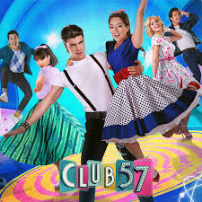

MAIS TOCADAS

Eva e seu irmão Rubén viajam por acidente até o ano de 1957. Eva se apaixona por JJ e decide ficar, mas sua decisão desencadeia um efeito borboleta que muda a vida de todos.
O Club 57 é uma série no estilo perfeito dos anos 50, uma emocionante história de amor entre o passado e o presente entre Eva e JJ. Uma história convincente cheia de reviravoltas em que a protagonista Eva, apaixonada pela ciência, consegue viajar no tempo e acaba parando em 1957 junto com seu irmão Ruben.